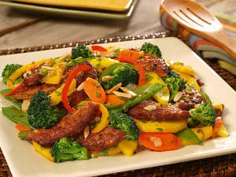

Nacho Pizza
Healthy pizza with nacho topping.

Ingredients
- Store bought dough
- ½ cup (120 ml) water
- 1 can black or pinto beans
- 2 cloves of garlic, minced
- 3 tablespoons tomato sauce
- ¾ teaspoon dried oregano
- A few grinds of pepper
- ¾ teaspoon salt
- 1 ½ avocados
- A quarter of a small red onion, diced
- A handful of sliced black olives (about 50 grams / 1.8 oz)
- 1 tablespoon jarred sliced jalapeños
- A small bunch of fresh cilantro
- sour cream
Crispy Tofu Bowl
Simple,easy, and quick dinner idea.

Ingredients
- 14 oz. extra-firm tofu
- 1/2 small red onion, very thinly sliced
- 1/4 c. Thai sweet chili sauce
- 1 tbsp. olive oil
- 1 seedless cucumber, chopped
- 1 c. quinoa, cooked
- 2 tbsp. roasted cashew halves
- 3 tbsp. cornstarch
Asian Veggie Stir Fry
Simple,easy, and quick dinner idea.
Ingredients
- sesame oil
- 4 large eggs
- ginger,
- 2 chopped cloves of garlic
- broccoli
- bean sprouts
- sliced scallions
- 1 tablespoon of soy sauce ,
- 1 tablespoon of rice vinegar,
- 3 tbsp. cornstarch